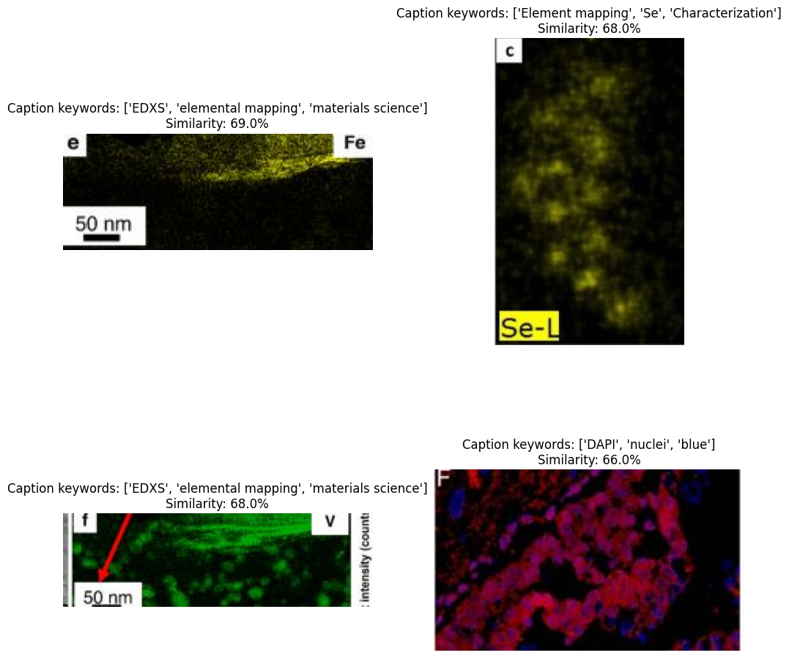

5. Retrieve microscopy data with MicroscopyCLIP model
Data preparation
[ ]:
!pip install beautifulsoup4 requests wordcloud matplotlib pandas
!pip install -qU transformers torch datasets gdcm pydicom pinecone-client
!pip install openai
!pip install datasets
!pip install open_clip_torch matplotlib
!pip install huggingface_hub
[3]:
import os
import torch
import requests
import numpy as np
import pandas as pd
from PIL import Image
from io import BytesIO
import open_clip
import IPython.display
import matplotlib.pyplot as plt
from datasets import load_dataset
from collections import OrderedDict
from transformers import CLIPProcessor, CLIPModel, CLIPTokenizer
from sklearn.metrics.pairwise import cosine_similarity
First, we need to load the hugging face dataset, containing the electron microscopy data extracted from literature using exsclaim 2.0. The data set is displayed below.
[56]:
dataset_all = load_dataset("kvriza8/microscopy_images")
all_images, all_prompts, all_prompt_summaries = dataset_all['train']['image'], dataset_all['train']['caption'], dataset_all['train']['caption_summary']
data = {'images': all_images, 'caption': all_prompts, 'caption_summary': all_prompt_summaries}
image_data_df = pd.DataFrame(data=data)
image_data_df.head()
[56]:
| images | caption | caption_summary | |
|---|---|---|---|
| 0 | <PIL.PngImagePlugin.PngImageFile image mode=RG... | EBSD inverse-pole maps of SLM from cross-secti... | ['EBSD', 'inverse-pole maps', 'SLM'] |
| 1 | <PIL.PngImagePlugin.PngImageFile image mode=RG... | Electron backscatter diffraction (EBSD) invers... | ['EBSD', 'inverse-pole maps'] |
| 2 | <PIL.PngImagePlugin.PngImageFile image mode=RG... | A bright-field transmission electron microscop... | ['TEM', 'microscopy', 'HIP'] |
| 3 | <PIL.PngImagePlugin.PngImageFile image mode=RG... | Morphology of HEA raw powder. | ['morphology', 'HEA', 'raw powder'] |
| 4 | <PIL.PngImagePlugin.PngImageFile image mode=RG... | A bright-field transmission electron microscop... | ['TEM', 'bright-field', 'CR sample'] |
Then we load the finetuned CLIP model for huggingface. This will download the file to the current directory
[7]:
from huggingface_hub import hf_hub_download
model_id = "kvriza8/clip-microscopy-50-epoch-captions"
filename = "open_clip_pytorch_model.bin"
filepath = hf_hub_download(repo_id=model_id, filename=filename)
print(f"Downloaded to: {filepath}")
Downloaded to: /root/.cache/huggingface/hub/models--kvriza8--clip-microscopy-50-epoch-captions/snapshots/7037bef9f9b89e64e99c3a847aa331a64c6265a5/open_clip_pytorch_model.bin
[8]:
import torch
from PIL import Image
import open_clip
# Loading the pretrained microscopy CLIP
model, _, preprocess = open_clip.create_model_and_transforms('ViT-B-32', pretrained=filepath)
tokenizer = open_clip.get_tokenizer('ViT-B-32')
[9]:
import torch
import numpy as np
def process_in_batches(images, texts, model, tokenizer, batch_size=32):
num_images = len(images)
num_batches = (num_images + batch_size - 1) // batch_size
all_image_features = []
all_text_features = []
for i in range(num_batches):
batch_images = images[i * batch_size:(i + 1) * batch_size]
batch_texts = texts[i * batch_size:(i + 1) * batch_size]
image_input = torch.tensor(np.stack(batch_images))
text_tokens = tokenizer([desc for desc in batch_texts])
with torch.no_grad():
image_features = model.encode_image(image_input).float()
text_features = model.encode_text(text_tokens).float()
image_features /= image_features.norm(dim=-1, keepdim=True)
text_features /= text_features.norm(dim=-1, keepdim=True)
all_image_features.append(image_features)
all_text_features.append(text_features)
# Concatenate all batch results
all_image_features = torch.cat(all_image_features, dim=0)
all_text_features = torch.cat(all_text_features, dim=0)
return all_image_features, all_text_features
[10]:
images = []
texts = []
original_images = []
for i in range(len(all_images[:])):
original_images.append(all_images[i].convert("RGB"))
images.append(preprocess(all_images[i].convert("RGB")))
texts.append(all_prompts[i])
all_image_features, all_text_features = process_in_batches(images, texts, model, tokenizer, batch_size=32)
[11]:
len(all_image_features)
[11]:
20936
[57]:
img_embeddings = [i.cpu().detach().numpy() for i in all_image_features]
text_embeddings = [i.cpu().detach().numpy() for i in all_text_features]
image_data_df["img_embeddings"] = img_embeddings
image_data_df["text_embeddings"] = text_embeddings
# image_data_df["image"] = image_data_df["images"]
[58]:
image_data_df["index"] = np.arange(len(image_data_df))
[59]:
image_data_df.head()
[59]:
| images | caption | caption_summary | img_embeddings | text_embeddings | index | |
|---|---|---|---|---|---|---|
| 0 | <PIL.PngImagePlugin.PngImageFile image mode=RG... | EBSD inverse-pole maps of SLM from cross-secti... | ['EBSD', 'inverse-pole maps', 'SLM'] | [0.0035233928, 0.01298129, -0.06411132, -0.063... | [-0.023630887, 0.011572799, -0.045188673, -0.0... | 0 |
| 1 | <PIL.PngImagePlugin.PngImageFile image mode=RG... | Electron backscatter diffraction (EBSD) invers... | ['EBSD', 'inverse-pole maps'] | [0.00286082, 0.047516637, -0.047493134, -0.048... | [-0.03610582, 0.018760981, -0.09379336, -0.025... | 1 |
| 2 | <PIL.PngImagePlugin.PngImageFile image mode=RG... | A bright-field transmission electron microscop... | ['TEM', 'microscopy', 'HIP'] | [-0.02125322, -0.0027237844, 0.062914334, 0.01... | [0.004127422, 0.048521295, 0.05200335, -0.0015... | 2 |
| 3 | <PIL.PngImagePlugin.PngImageFile image mode=RG... | Morphology of HEA raw powder. | ['morphology', 'HEA', 'raw powder'] | [-0.008284677, -0.021394674, 0.01164693, -0.03... | [-0.0002535284, -0.04777809, 0.03370015, -0.00... | 3 |
| 4 | <PIL.PngImagePlugin.PngImageFile image mode=RG... | A bright-field transmission electron microscop... | ['TEM', 'bright-field', 'CR sample'] | [0.07367363, 0.061459213, 0.041252393, -0.0204... | [-0.00076461263, 0.06604642, 0.07091171, -0.00... | 4 |
We can store the calculated image and text embeddings as a hugging face Dataset so that we do not to recalculate them each time.
[64]:
import io
# Convert PIL images to bytes
def image_to_bytes(img):
byte_io = io.BytesIO()
img.save(byte_io, format='PNG')
return byte_io.getvalue()
image_data_df['images'] = image_data_df['images'].apply(image_to_bytes)
# Now, create the Hugging Face dataset
from datasets import Dataset
dataset = Dataset.from_pandas(image_data_df)
dataset.save_to_disk('huggingface_dataset')
[66]:
from huggingface_hub import create_repo
# Replace 'kvriza8' with your Hugging Face username
repo_id = "kvriza8/clip_microscopy_image_text_embeddings"
create_repo(repo_id=repo_id, repo_type="dataset")
[66]:
RepoUrl('https://huggingface.co/datasets/kvriza8/clip_microscopy_image_text_embeddings', endpoint='https://huggingface.co', repo_type='dataset', repo_id='kvriza8/clip_microscopy_image_text_embeddings')
[ ]:
from huggingface_hub import HfApi, HfFolder
from datasets import Dataset
api = HfApi()
api.upload_folder(
folder_path="huggingface_dataset",
path_in_repo="main",
repo_id="kvriza8/clip_microscopy_image_text_embeddings",
repo_type="dataset"
)
dataset.push_to_hub("kvriza8/clip_microscopy_image_text_embeddings")
[68]:
import matplotlib.pyplot as plt
import numpy as np
def plot_images(images):
for image in images:
plt.imshow(image)
plt.show()
def plot_images_by_side(top_images):
index_values = list(top_images.index.values)
list_images = [top_images.iloc[idx].image for idx in index_values]
list_captions = [top_images.iloc[idx].caption_summary for idx in index_values]
similarity_score = [top_images.iloc[idx].cos_sim for idx in index_values]
n_row = n_col = 2
_, axs = plt.subplots(n_row, n_col, figsize=(12, 12))
axs = axs.flatten()
for img, ax, caption, sim_score in zip(list_images, axs, list_captions, similarity_score):
img1 = img
ax.imshow(img1)
ax.axis('off')
sim_score = 100*float("{:.2f}".format(sim_score))
ax.title.set_text(f"Caption keywords: {caption}")
plt.show()
[84]:
import matplotlib.pyplot as plt
import matplotlib.image as mpimg
def plot_images_by_side(top_images):
index_values = list(top_images.index.values)
list_images = [top_images.iloc[idx].image for idx in index_values]
list_captions = [top_images.iloc[idx].caption_summary for idx in index_values]
similarity_score = [top_images.iloc[idx].cos_sim for idx in index_values]
n_row = n_col = 2
_, axs = plt.subplots(n_row, n_col, figsize=(12, 12))
axs = axs.flatten()
for img, ax, caption, sim_score in zip(list_images, axs, list_captions, similarity_score):
if isinstance(img, str):
img1 = mpimg.imread(img)
else:
img1 = img
ax.imshow(img1)
ax.axis('off')
sim_score = 100 * float("{:.2f}".format(sim_score))
ax.title.set_text(f"Caption keywords: {caption}\nSimilarity: {sim_score}%")
plt.show()
[70]:
def get_single_text_embedding(texts, model, tokenizer, batch_size=1):
num_images = 1
num_batches = (num_images + batch_size - 1) // batch_size
all_text_features = []
for i in range(num_batches):
batch_texts = texts[i * batch_size:(i + 1) * batch_size]
text_tokens = tokenizer([desc for desc in batch_texts])
with torch.no_grad():
text_features = model.encode_text(text_tokens).float()
text_features /= text_features.norm(dim=-1, keepdim=True)
all_text_features.append(text_features)
all_text_features = torch.cat(all_text_features, dim=0)
return all_text_features
[71]:
def get_single_image_embedding(images, model, tokenizer, batch_size=1):
num_images = len(images)
num_batches = (num_images + batch_size - 1) // batch_size
all_image_features = []
for i in range(num_batches):
batch_images = images[i * batch_size:(i + 1) * batch_size]
image_input = torch.tensor(np.stack(batch_images))
with torch.no_grad():
image_features = model.encode_image(image_input).float()
image_features /= image_features.norm(dim=-1, keepdim=True)
all_image_features.append(image_features)
all_image_features = torch.cat(all_image_features, dim=0)
return all_image_features
[76]:
def get_top_N_images(query, data, top_K=4, search_criterion="text"):
"""
Retrieve top_K images similar to the query
"""
# Text to image Search
if(search_criterion.lower() == "text"):
query_vect = get_single_text_embedding(query, model, tokenizer, batch_size=1)
# Image to image Search
else:
query_vect = get_single_image_embedding(query, model, tokenizer, batch_size=1)
# Relevant columns
revevant_cols = ["caption_summary", "images", "cos_sim"]
# Run similarity Search
data["cos_sim"] = data["img_embeddings"].apply(lambda x: cosine_similarity(query_vect.reshape(1, -1), x.reshape(1, -1)))
data["cos_sim"] = data["cos_sim"].apply(lambda x: x[0][0])
"""
Sort Cosine Similarity Column in Descending Order
Here we start at 1 to remove similarity with itself because it is always 1
"""
most_similar_articles = data.sort_values(by='cos_sim', ascending=False)[1:top_K+1]
return most_similar_articles[revevant_cols].reset_index()
Based on the user text query the top 4 most related imges will be retrieved
[77]:
query_caption = 'EDS mapping'
[78]:
top_images = get_top_N_images(query_caption, image_data_df)
print("Query: {}".format(query_caption))
top_images
Query: EDS mapping
[78]:
| index | caption_summary | images | cos_sim | |
|---|---|---|---|---|
| 0 | 13287 | ['EDXS', 'elemental mapping', 'materials scien... | b'\x89PNG\r\n\x1a\n\x00\x00\x00\rIHDR\x00\x00\... | 0.689311 |
| 1 | 11937 | ['Element mapping', 'Se', 'Characterization'] | b'\x89PNG\r\n\x1a\n\x00\x00\x00\rIHDR\x00\x00\... | 0.683976 |
| 2 | 13288 | ['EDXS', 'elemental mapping', 'materials scien... | b'\x89PNG\r\n\x1a\n\x00\x00\x00\rIHDR\x00\x00\... | 0.681020 |
| 3 | 7284 | ['DAPI', 'nuclei', 'blue'] | b'\x89PNG\r\n\x1a\n\x00\x00\x00\rIHDR\x00\x00\... | 0.662930 |
[83]:
from PIL import Image
import io
# Convert byte strings to images
def convert_to_image(byte_data):
return Image.open(io.BytesIO(byte_data))
top_images['image'] = top_images['images'].apply(convert_to_image)
[85]:
import matplotlib.image as mpimg
plot_images_by_side(top_images)
